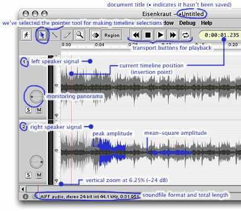

The waveform (timeline) frame shows a timeline axis with time advancing from left to right, a list of tracks corresponding to the channels of the currently open sound file. on the bottom, the timeline scrollbar allows to navigate in the timeline. operations on the tracks are determined by the choice of a tool from the timeline toolbar on the top margin.
